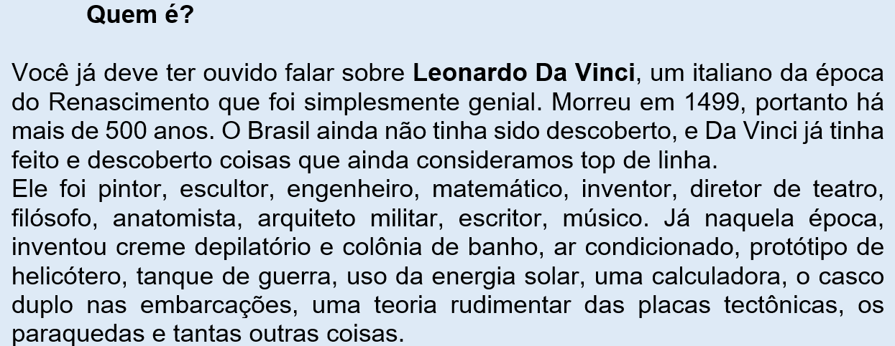
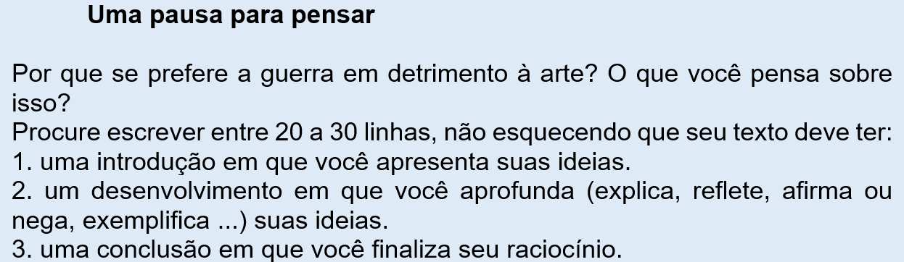
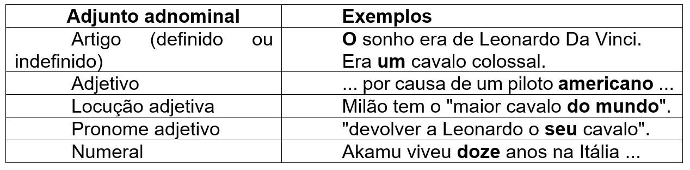
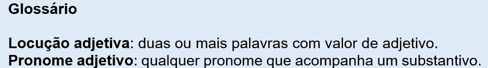
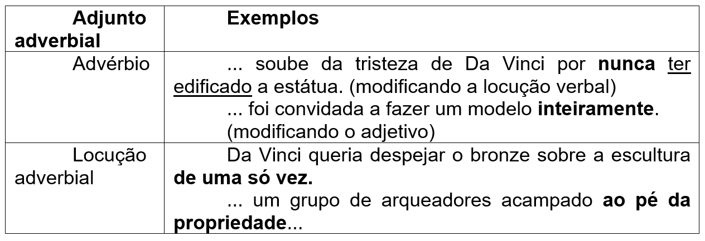
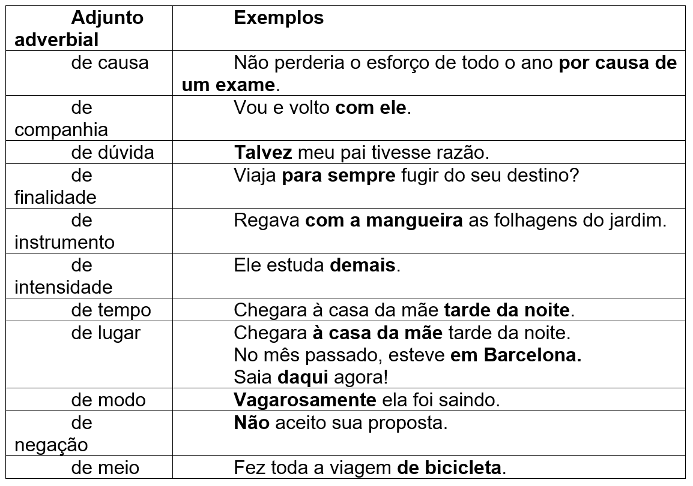
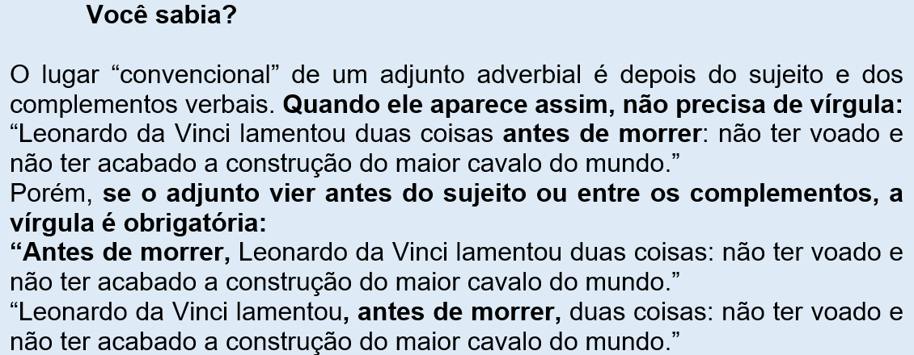

Capítulo 4: Da concepção à elaboração na indústria e na arte: Os termos integrantes e acessórios
Contextualizando...
Questão-problema:
Você já parou para pensar em todas as etapas envolvidas na elaboração de grandes obras – na indústria ou mesmo na arte? Desde a concepção do projeto, até a definição da técnica e dos materiais utilizados, será que as obras são fruto da “genialidade” de um homem só?
O cavalo "que nunca foi" de Leonardo Da Vinci
Fonte: http://leonardodavinci.cc/gran-cavallo/
Milão tem o "maior cavalo do mundo". Gigantesco, oito metros de altura, e em bronze. O sonho era de Leonardo Da Vinci, mas só concretizado 500 anos depois por causa de um piloto americano que soube da tristeza de Da Vinci por nunca ter edificado a estátua. Antes de morrer, Leonardo da Vinci lamentou duas coisas: não ter voado e não ter acabado a construção do maior cavalo do mundo. O projeto "Il Cavallo" está em Milão e é uma homenagem ao Renascimento, a Da Vinci – o mais grandioso universalista – presente dado aos italianos pelos Estados Unidos. Da Vinci desenhou o que seria o maior cavalo do mundo, respondendo a uma encomenda do Duque de Milão, Ludovico Sforza, a ser construído em bronze e através de uma técnica revolucionária. O projeto avançou e, após várias miniaturas, Da Vinci fez um modelo em barro em tamanho real, que expôs nas vinhas do palácio do duque. Mas seis anos depois, a 10 de setembro de 1499, as tropas francesas invadiram Milão e um grupo de arqueadores acampado ao pé da propriedade usou a estátua como alvo de pontaria. O cavalo ficou em pedaços, e – pior – o bronze reservado para a estátua foi usado para fazer canhões. Da Vinci fugiu para França, os moldes e esboços se perderam, mas um piloto Charles Dent – que também era colecionador de arte, escultor e fascinado pela Renascença – leu a história sobre o sonho de Da Vinci e decidiu "devolver a Leonardo o seu cavalo". As primeiras maquetes, em cera e barro, foram feitas em 1985 e, com o passar dos anos, o comitê de escultores e historiadores, voluntários para o projeto, multiplicou-se. O cavalo ficou pronto meses depois, mas o comitê de historiadores e artistas da Leonardo's Horse Inc. considerou a anatomia "esquisita" e a posição da cabeça "errada". Foi então que a escultora Nina Akamu entrou na história. Akamu viveu doze anos na Itália e, além disso, monta e treina cavalos. Considerada a escolha ideal, foi convidada a fazer um modelo inteiramente novo. Ninguém sabe como é que Leonardo da Vinci queria o seu cavalo ou qual a posição final. A opção escolhida por Akamu foi um cavalo soerguido, com apenas duas patas a tocar o solo. Não é uma obra de arte da Renascença, é uma escultura contemporânea fiel ao caráter e ao espírito de Leonardo. Akamu preocupou-se com o movimento e a postura que Leonardo tinha pensado nos desenhos que fez sobre cavalos. A técnica escolhida não foi a de Da Vinci, que queria despejar o bronze sobre a escultura de uma só vez. O bronze foi colocado com uma máquina nas áreas maiores e, à mão, nas extremidades e cavidades. O "cavalo que nunca foi", como é conhecido há décadas, teria provado também a genialidade de Da Vinci como escultor.
O pensamento de Leonardo da Vinci corria e voava em todas as direções. O caso do projeto do “il Cavallo” é verdadeiro, assim como o bronze que ele possuíra para fazer a gigantesca escultura e que acabou perdendo porque foi usado para canhões. Não foi a primeira vez (nem será a última) que a arte foi prejudicada em benefício da destruição provocada pela guerra.
Reconstruindo conhecimentos:
Neste capítulo, vamos estudar a importância de diferenciar os termos integrantes dos termos acessórios da oração. Continuaremos nossos estudos sobre a sintaxe da língua portuguesa e, para tanto, vamos retomar o que já vimos no Ebook 1.
Nele, vimos que o verbo tem uma fundamental importância e devemos saber identificá-lo.
Os verbos, sintaticamente, dividem-se transitivos, intransitivos ou verbos de ligação.
Todos os verbos que pedem um objeto (alguma coisa ou alguém) são chamados de verbos transitivos.
Os verbos transitivos podem se classificar em verbo transitivo direto, transitivo indireto.
Serão transitivos diretos quando o objeto que irá completá-lo não precisar de preposição; serão transitivos indiretos quando exigirem preposição.
Há verbos transitivos que pedem objeto direto e indireto.
Há também verbos intransitivos, isto é, que não necessitam ser completados por nenhum objeto. Basta só que sujeito execute a ação.
Quanto aos verbos de ligação, sua função é ligar o sujeito ao seu modo de ser ou de estar. Esta ligação é tão forte, que o sujeito quase se confunde com o seu predicativo. Por isso o termo integrante do verbo de ligação se chama predicativo de sujeito.
Desde o início do estudo das orações, venho reforçando o poder do verbo, chegando a compará-lo com o sistema solar para ajudá-lo a compreender melhor este assunto chamado sintaxe.
O verbo, metaforizado como Sol, agrega elementos em torno de si; se o Sol agrega planetas e outros corpos celestes, o verbo agrega nomes (substantivos, ou pronomes) que vão exercer funções de sujeito, objeto direto, objeto indireto, predicativo do sujeito.
Continuo com esta metáfora para introduzir agora o poder do nome.
Assim como os planetas são regidos pelo Sol, eles (a Terra, Saturno...) também têm poderes, também regem seus satélites: a Terra tem a Lua, por exemplo, que sofre a força gravitacional da Terra. Os substantivos, os adjetivos, os advérbios podem reger outros nomes.
Vamos ver quais são eles?
Complemento nominal
Vimos que os objetos direto e indireto e o predicativo do sujeito podem vir em forma de substantivos e adjetivos. Pois bem, acompanhe a explicação:
1.No texto que abriu este capítulo, há uma oração que diz “um piloto americano soube da tristeza de Da Vinci”. O verbo desta oração é “saber” (soube). Neste exemplo, o verbo é transitivo indireto, pois quem sabe, sabe de alguma coisa, pedindo a preposição de, exigindo um objeto indireto, que é “da tristeza”.
2. Observe que o substantivo “tristeza” é abstrato, isto é, não tem existência própria, precisa pertencer a alguém.
3. Se deixarmos somente “um piloto americano que soube da tristeza...”, a oração fica incompleta, pois a palavra tristeza pede um complemento.
4. No texto, o complemento do substantivo abstrato “tristeza” é “de Da Vinci”, que será o complemento nominal.
Outro exemplo:
1. Na oração, “A vida de Leonardo da Vinci foi necessária ao Renascimento”, o verbo é ser (foi), verbo de ligação que terá como predicativo do sujeito o adjetivo “necessária”.
2. Observe que “necessária” é um adjetivo que caracteriza a vida de Leonardo da Vinci.
3. Se deixarmos somente "A vida de Leonardo da Vinci foi necessária”, a oração fica incompleta, pois a palavra necessária pede um complemento: “necessária a quem, a quê?”
4. “ao Renascimento “será o complemento nominal de “necessária”.
Os complementos nominais vêm regidos de preposição, como os objetos indiretos, mas não podem ser confundidos com eles. Os complementos nominais são fundamentais para a compreensão das idéias que escrevemos, completando nomes e não verbos.
O complemento nominal é também um termo integrante da oração.
Termos de acessórios da oração
A questão que impulsiona o estudo deste capítulo é justamente esta: por que é importante saber a diferença entre termos integrantes e termos acessórios da oração?
Enquanto os termos integrantes (o sujeito, os objetos diretos e indiretos, os predicativos do sujeito e do objeto, o complemento nominal) são essenciais para o entendimento de todos os enunciados, os termos acessórios, embora tragam dados novos à oração, não são imprescindíveis ao seu entendimento.
Os termos acessórios são o adjunto adnominal, o adjunto adverbial, o aposto e o vocativo.
Vamos conhecer cada um deles.
Adjunto adnominal
São palavras que se agregam ao substantivo para especificar, ampliar ou delimitar seu significado (não importantanto se o substantivo é sujeito, objeto direto ou indireto, predicativo, complemento nominal). O quadro a seguir apresenta as palavras que podem funcionar como adjuntos adnominais. Os exemplos foram baseados no texto que introduziu este capítulo.
 Adjunto adverbial
São palavras que alteram o significado do verbo ou do adjetivo ou de um advérbio. É difícil enumerar todos os tipos de adjuntos adverbiais. Muitas vezes, só se consegue descobrir o tipo de adjunto adverbial no contexto em que foi utilizado.
Classificação dos adjuntos adverbiais:
 
Aposto
É um elemento da oração que explica ou caracteriza ou enumera um substantivo ou um pronome chamado de termo fundamental.
Exemplos (observe que o aposto vem sempre entre vírgulas):
- Os professores, pobres criaturas, estavam sem salário há meses.
- A Índia, país dos mistérios, atrai muitos turistas.
- Napoleão Bonaparte, imperador da França, era um homem baixinho.
Vocativo
São palavras que utilizamos para invocar, chamar ou dar nome a uma pessoa ou coisa personificada. O vocativo vem sempre acompanhado de vírgula para ficar isolado na oração, para que ele não se confunda com a função de sujeito.
Exemplos de vocativo:
- Meu Jesus, atende ao meu pedido... (estou clamando a Jesus; o sujeito do verbo é “você” ou “o senhor”)
- Você compra, mãe, aquele tênis para mim? (estou chamando a mãe; o sujeito do verbo comprar é “você”)
- “Dizei-me vós, Senhor Deus!” (estou invocando Deus; o sujeito do verbo dizer é “vós”)
- Ó minha amada, que olhos tu tens! (o poeta está chamando o seu amor; o sujeito do verbo ter é “tu”)
Praticando:
1. Classifique os termos em negrito, escrevendo nos parênteses se é vocativo (V) ou se é aposto (A):
a) O gado, reses famintas, pastava pouco. ( )
b) A seca, assunto de todas as pessoas, causava tristeza. ( )
c) Vem cá, querida criança, quero te dizer uma coisa. ( )
d) Meus jovens alunos, nunca percam a esperança! ( )
e) Halley, o cometa, voltará somente no ano de 2062. ( )
2. Você viu que tanto o aposto quanto o vocativo pedem isolamento com vírgulas. Então, insira as virgulas necessárias nas orações a seguir:
a) Salve meu coração como estás?
b) O elefante e a águia dois animais tão diferentes podem viver 100 anos.
c) Galileu e Torricelli famosos físicos italianos descobriram o peso do ar e a lei da pressão atmosférica.
d) Marli teus olhos parecem infinitamente azuis.
e) “Pastores da terra que saltais abismos,
nunca entendereis a minha condição.” (Cecília Meireles)
3. Sabendo que o complemento nominal não pode ser confundido com o objeto indireto, porque o primeiro vem completar um nome e o segundo vem completar
um verbo, observe os termos em negrito e escreva nos parênteses se eles são objeto indireto (OI) ou complemento nominal (CN):
a) Da janela, as mulheres assistiam à cena. ( )
b) Tinha nojo de si mesma. ( )
c) Ninguém teve notícia dele. ( )
d) Perdoem ao pobre tolo. ( )
e) Se você gosta de mel, não temas as abelhas. ( )
f) As riquezas nem sempre pertencem aos sábios. ( )
g) Tens interesse pelos negócios dele? ( )
4. Sublinhe os adjuntos adnominais das orações abaixo:
a) Milão tem o “maior cavalo do mundo”.
b) Gigantesco, oito metros de altura, e em bronze.
c) Da Vinci fez um modelo em barro em tamanho real, que expôs nas vinhas do palácio do duque.
d) Da Vinci fugiu para França, e os moldes e esboços se perderam.
e) Da Vinci queria despejar o bronze sobre a escultura de uma só vez.
5. As palavras que estão em negrito têm a função de adjunto adverbial. Classifique a circunstância de cada um, assinalando-a:
a) O sonho era de Leonardo Da Vinci, mas só concretizado 500 anos depois.
( ) adjunto adverbial de lugar
( ) adjunto adverbial de tempo
( ) adjunto adverbial de instrumento
( ) adjunto adverbial de causa
b) Akamu viveu doze anos na Itália e, além disso, monta e treina cavalos.
( ) adjunto adverbial de lugar
( ) adjunto adverbial de meio
( ) adjunto adverbial de modo
c) O bronze foi colocado com uma máquina nas áreas maiores e, à mão, nas extremidades e cavidades.
( ) adjunto adverbial de tempo
( ) adjunto adverbial de instrumento
( ) adjunto adverbial de modo